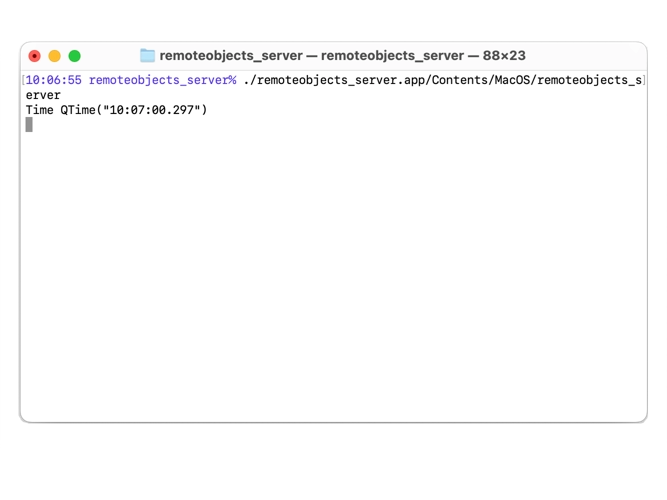

Time Server Application
A server which shares a time object with connected clients.
The Time Server Application instantiates a MinuteTimer object and shares it with all connected Time Client Applications.

Defining Remote Objects using a REP-file
The REP-file "timemodel.rep" in the parent directory of the example is used to generate the header-files used by both applications. For this application, the generated "rep_timemodel_source.h" file defines MinuteTimerSource, the the class to subclass for the implementation of MinuteTimer, and other related classes.
The TimeModel Class
The TimeModel class in timemodel.h and timemodel.cpp implements the time object to share. It uses a QBasicTimer to ensure that the time is updated by calling the timerEvent member function.
void MinuteTimer::timerEvent(QTimerEvent *) { QTime now = QTime::currentTime(); if (now.second() == 59 && now.minute() == time.minute() && now.hour() == time.hour()) { // just missed time tick over, force it, wait extra 0.5 seconds time = time.addSecs(60); timer.start(60500, this); } else { time = now; timer.start(60000-time.second()*1000, this); } qDebug()<<"Time"<<time; setHour(time.hour()); setMinute(time.minute()); emit timeChanged(); }
Sharing an Instance of TimeModel
Instances of QRemoteObjectHost and a QRemoteObjectRegistryHost are created to host an object and having a registry to find it. A MinuteTimer object is then created and it is shared using the enableRemoting member function of the QRemoteObjectRegistryHost object.
int main(int argc, char *argv[]) { QCoreApplication app(argc, argv); #if defined(Q_OS_UNIX) || defined(Q_OS_LINUX) || defined(Q_OS_QNX) signal(SIGINT, &unix_handler); #elif defined(Q_OS_WIN32) SetConsoleCtrlHandler((PHANDLER_ROUTINE)WinHandler, TRUE); #endif QRemoteObjectHost node(QUrl(QStringLiteral("local:replica")),QUrl(QStringLiteral("local:registry"))); QRemoteObjectRegistryHost node2(QUrl(QStringLiteral("local:registry"))); MinuteTimer timer; node2.enableRemoting(&timer); Q_UNUSED(timer) return app.exec(); }
See also Time Client Application.